將 nopCommerce 部署至 Azure VM
在 Azure 上建立虛擬機器
本說明旨在引導您完成設定 Azure 虛擬機器的必要步驟，以便託管 nopCommerce 網頁應用程式，並允許使用 WebDeploy 進行部署。
建立新的 VM
登入 Azure portal
點擊 Add 按鈕
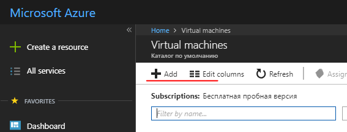
在 Get Started 類別中選擇 Windows Server 2016 VM，或是在 Compute 類別中選擇任何 Windows Server 2016 版本，例如 Windows Server 2016 Datacenter
填寫必要的欄位以設定新的 VM。
- 使用者名稱/密碼。您將需要此資訊來存取 VM。這是用於透過 RDP 連接到 VM 的管理員帳號。
- 資源群組。這是包含為此 VM 建立的所有資源的「虛擬資料夾」名稱。您可以透過刪除該資源群組，來刪除在此過程中建立的所有資源。
在虛擬機器 (VM) 上設定元件與功能
- DNS 名稱：
- 從 Azure portal，導覽至您的虛擬機器總覽頁面。
- 在 DNS 名稱下方，點擊 Configure。
- 提供一個全球唯一的 DNS 名稱。（當名稱驗證通過時，會出現一個綠色勾號。）
- 點擊 Save 以儲存設定。
設定 Azure 防火牆規則
在 Azure 入口網站中設定輸入防火牆規則。在「網路 (Networking)」區段中，新增一項輸入連接埠規則以建立新的防火牆項目：
- http - 連接埠 80 (優先級 100)
- WebDeploy - 連接埠 8172 (優先級 1010)
- RDP - 連接埠 3389 (優先級 320)
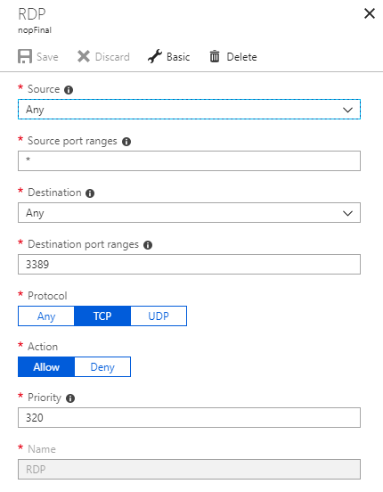
在 Azure 入口網站中設定輸出防火牆規則。在「網路 (Networking)」區段中，新增一項輸出連接埠規則以建立新的防火牆項目：
- RDP - 連接埠 3389 (優先級 100)
使用帳號密碼連線至虛擬機器 (RDP)
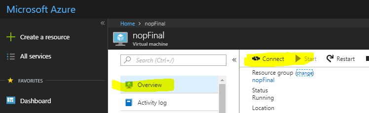
安裝 IIS (網頁伺服器) 與 ASP.NET 4.6
開啟 伺服器管理員儀表板 (伺服器管理員 - 儀表板會在第一次啟動時開啟)
選擇 2 新增角色及功能
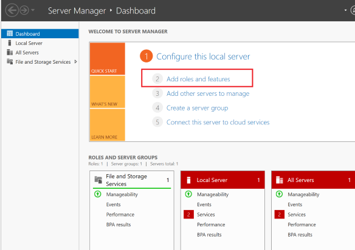
接受預設值並按 下一步 三次，以前往「伺服器角色」區段。
選擇 網頁伺服器 (IIS)
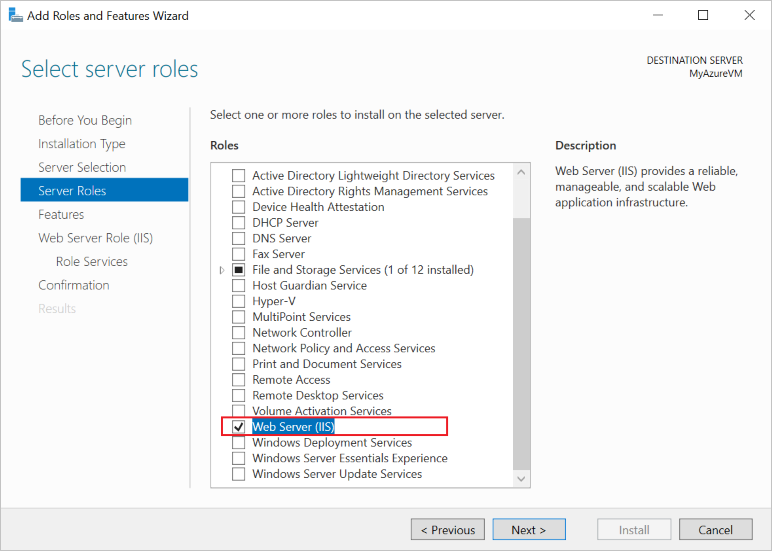
當系統提示時，確認安裝額外的 IIS 管理主控台。
按 下一步 三次，以前往 網頁伺服器角色 (IIS) --> 角色服務 區段。
選擇 管理服務，這是啟用 Web Deploy (透過連接埠 8172) 所必需的。當系統提示時，確認安裝額外的 ASP.NET 4.6。
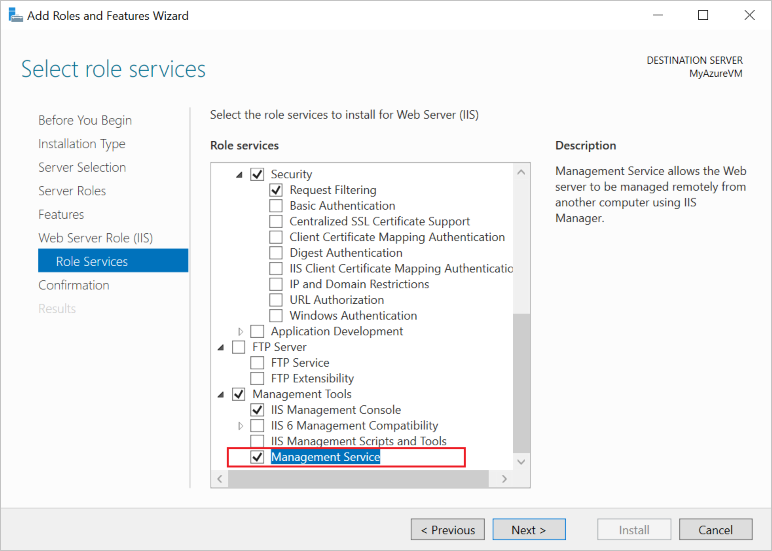
選擇 下一步 以確認設定，然後按 安裝 以完成 IIS 設定。
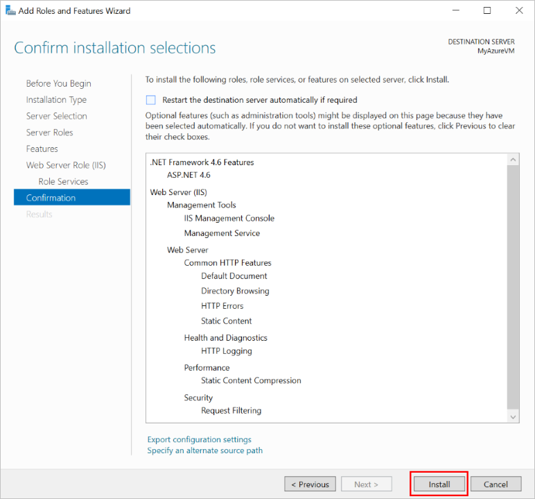
安裝完成後：
- IIS 已安裝並執行，且已為連接埠 80 建立內部防火牆規則。
- 網頁管理服務已安裝，且已為連接埠 8172 建立內部防火牆規則。
設定 IE 增強安全性 (Off)
在新的 Azure VM 上，預設的安全規則會防止透過 Internet Explorer 下載執行檔。若要下載 WebDeploy 執行檔，您必須先停用 IE 增強安全性。
在 Server Manager 中，開啟左側的 Local Server 區段。
在主面板中，找到「IE Enhanced Security Configuration:」，點選旁邊的 On。
在出現的對話視窗中，選擇 Off for Administrators，並將使用者選項選擇 On for Users，然後點選 OK。
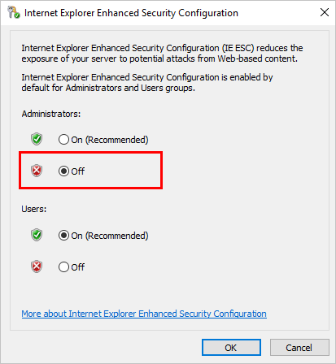
安裝 Web Deploy
- 啟動 Internet Explorer。
- 接受預設的安全性設定。
- 下載 WebDeploy_amd64_en-US.msi
- 依照安裝步驟安裝 Web Deploy。
- 選擇「Complete」（完整）選項以安裝所有元件。
安裝最新版本的 NET Core SDK
安裝 .NET Core Windows Server Hosting 套件
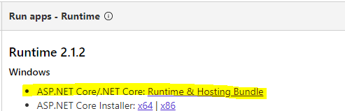
IIS 用於託管 ASP.NET Core 網頁應用程式，其角色將轉變為代理伺服器。ASP.NET Core 應用程式在 IIS 上的託管是透過原生的 AspNetCoreModuleV2 來進行，該模組會將請求重新導向至 Kestrel 網頁伺服器。此模組會控制外部處理程序 dotnet.exe 的啟動（應用程式即託管於該處理程序中），並將所有來自 IIS 的請求轉發給此主機處理程序。
安裝此套件後，請在命令列執行 iisreset 指令，或手動重新啟動 IIS，以便伺服器套用變更。
設定 IIS
您必須賦予
wwwroot資料夾相關權限。在 IIS Manager 中選取該網站，選擇 Edit Permissions，並確保 IUSR、IIS_IUSRS 或為應用程式集區 (Application Pool) 設定的使用者，是具有「讀取與執行 (Read & Execute)」權限的授權使用者。如果這些使用者都不存在，請新增 IUSR 並賦予其「讀取與執行」權限。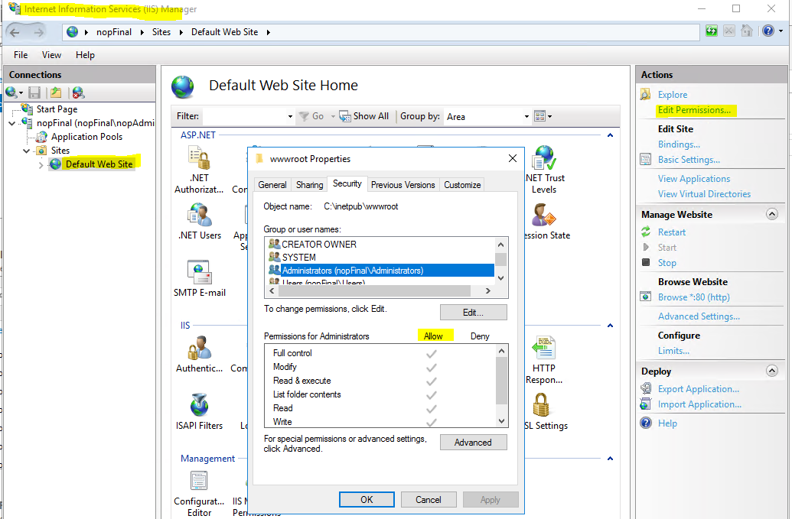
點擊右側面板上的 Restart 以重新啟動 IIS。
現在一切準備就緒，可以將專案部署 (publish) 了。
將 nopCommerce 發佈至 Azure VM (使用 Microsoft Visual Studio)
發佈 nopCommerce 應用程式與發佈任何其他 ASP.NET Core 應用程式並無不同。因此，以下將說明執行發佈的最低需求。更多詳細資訊請參閱 here。
部署 Nop.Web 專案
在 Microsoft Visual Studio 中開啟您的網頁應用程式解決方案。在「方案總管」(Solution Explorer) 中對專案按一下右鍵，並選擇 發布 (Publish)。
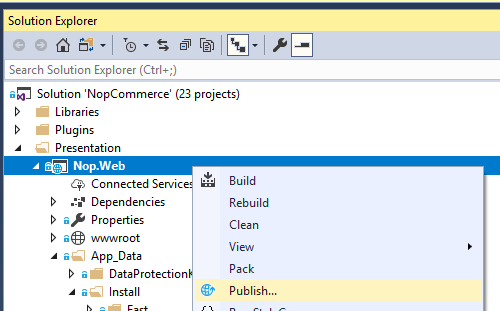
使用頁面右側的箭頭捲動發布選項，直到找到 Microsoft Azure Virtual Machines。從現有的虛擬機器清單中選擇適當的 VM。
點擊 建立設定檔 (Create Profile)。
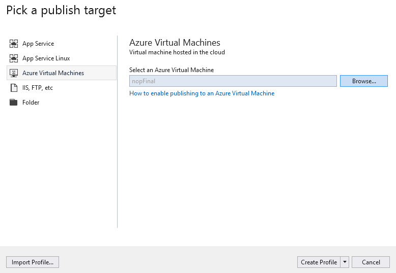
若要檢視與修改發布設定檔的設定，請選擇 設定 (Configure)。使用 驗證連線 (Validate Connection) 按鈕來確認您已輸入正確的資訊。
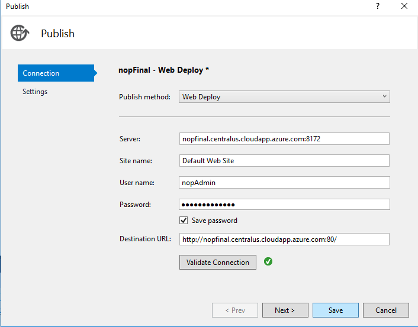
如果您希望確保每次上傳後，網頁伺服器都能擁有乾淨的網頁應用程式複本（且不會留下先前部署所遺留的檔案），您可以在 設定 (Settings) 索引標籤中勾選 移除目的地處的其他檔案 (Remove additional files at destination) 核取方塊。警告：啟用此設定進行發布將會刪除網頁伺服器（wwwroot 目錄）上現有的所有檔案。請確保在啟用此選項進行發布前，您已了解該機器的狀態。
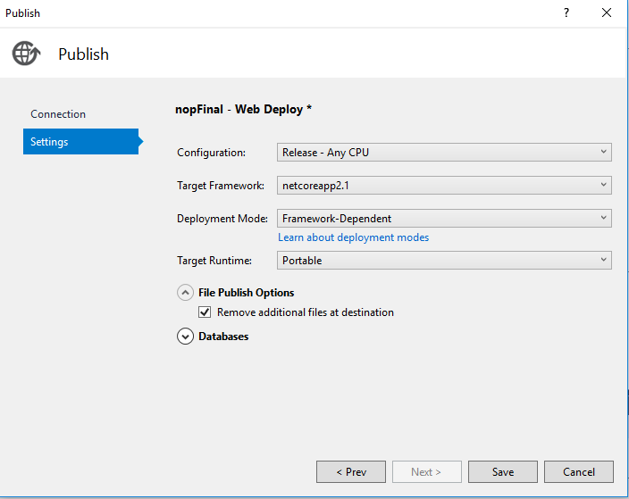
點擊 儲存 (Save)。
點擊 發布 (Publish) 以開始部署程序。
現在，您已將網頁應用程式成功部署至 Azure 虛擬機器。
常見問題與解決方案
若要準確地調查任何問題，您需要啟用記錄功能 - 在 web.config 中啟用 stdoutLog：
stdoutLogEnabled="true" stdoutLogFile=".\logs\stdout"
IIS 無法找到 web.config
您可以參考以下網址找到可能的解決方案： support.microsoft.com